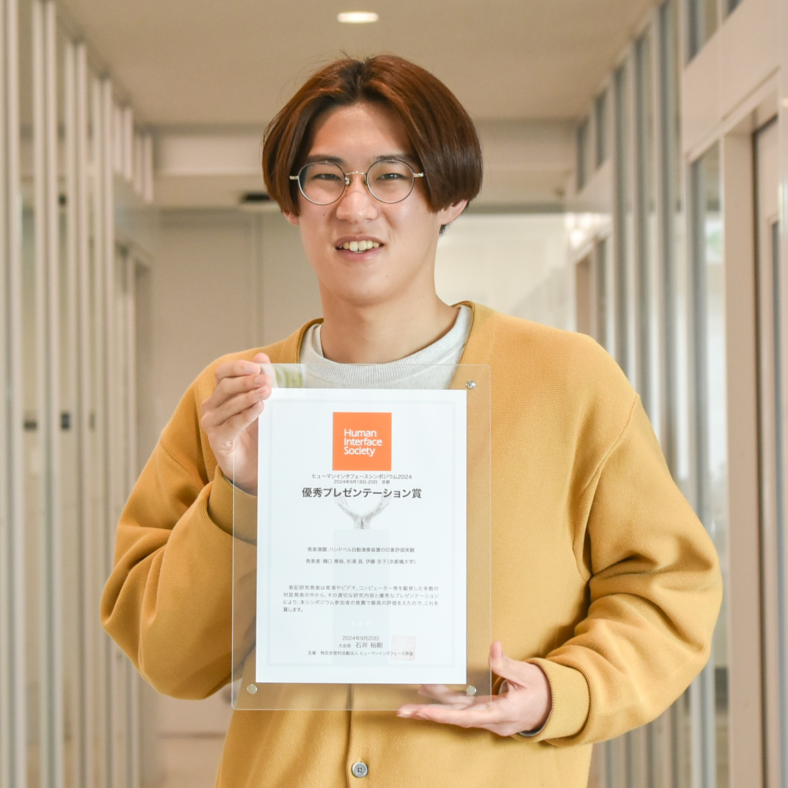

樋口 雅裕
樋口 雅裕
Masahiro Higuchi
興味分野
サウンド・ビジュアル空間演出、マイコンを活用したシステム設計、
IoT・組み込みシステム開発、デジタルデザイン表現、Digital Fabrication、
3Dプリンタ活用支援、電子工作支援、プログラミング支援
研究内容
ハンドベル自動演奏装置の印象評価▶️、利便性と環境を配慮したカレンダー、
効率的な公共交通機関の利用促進計画、子供向け情報教育支援(地域連携型)
言語・マイコン
言語：Python、C/C++、Arduino、HTML、CSS、JavaScript、Processing
マイコン：Arduino、ESP32、M5Stick、Raspberry Pi、SPRESENSE
趣味
電子工作、プログラミング、インテリアデザイン、料理、
バドミントン、ウィンタースポーツ、ドライブ
自己紹介
現在、大学3回生として講義を受講しながら研究開発にも取り組んでおり、正式にゼミに配属されたことで、より一層研究に没頭する日々を送っています。 幼少期からものづくりが好きで、祖父との工作や小学生時代のプログラミング教室をきっかけに、デジタル技術を活用したものづくりに興味を持ち、独学で学び始めました。大学入学後は、低回生のうちから研究室や CreationLab で活動し、マイコンや電子工作を活用したシステム開発に取り組んできました。ロボット制御やIoTシステム開発、デジタルサイネージ制作など、幅広い分野で経験を積んでいます。 「ものづくりに完成はない」 をモットーに、技術やアイデアの進化を追求し、より良い形を求めて試行錯誤を続けています。現在は、培った技術や知識を活かし、研究活動を通じてさらに高度なシステム開発に挑戦しています。 【更新：2025年4月】
経歴
| 2023/03 | 京都成章高等学校 卒業 |
| 2023/04～ | 京都橘大学 工学部 情報工学科 入学 |
| 2025/03～ | 杉浦研究室所属 |
資格
・普通自動車第一種免許
学会発表
| 2024/09 | 樋口 雅裕, 杉浦 昌, 伊藤 京子: 『ハンドベル自動演奏装置の印象評価実験』, ヒューマンインタフェース学会シンポジウム2024, 1T-D1 (2024).🔗▶️【優秀プレゼンテーション賞】 |
| 2024/03 | 樋口雅裕, 杉浦昌: 『「中学、高校、大学のIT教育の課題」-イベント展示用マイコン制御システムを構築した体験をもとに-』, 情報処理学会第86回全国大会, 7ZL-06 (2024), 第86回全国大会講演論文集 巻2024, 号1, p.913-914.📄 |
メディア報道
| 2025/06/30 | テレビ出演 | NHK大阪『ぐるっと関西おひるまえ』,「学校へどーも」』 2025年6月30日放送. |
| 2025/03/10 | 新聞掲載 | 京都新聞社『「こんなの作って」友人の頼みに応えたらみんなに恩恵 京都・山科のバス運行状況を「見える化」』, 京都新聞, 2025年4月9日, 夕刊1面.📄 |
| 2025/03/10 | 誌面掲載 | 株式会社 union.a, ハンケイ500m Vol.84, TOWAの実力派 大学レポート, p.38-39.📄 |
| 2025/03/05 | ラジオ出演 | 株式会社 エフエム京都, α-STATION, UICK Radio, 2025年3月5日放送. |
| 2024/12/11 | WEB掲載 | 学校法人 京都橘大学, Tachibana Discovery, 「いつかこんなことができたら」と二人三脚で挑みつづける！ハンドベル自動演奏装置でヒューマンインターフェースシンポジウム2024で優秀プレゼンテーション賞を受賞！.🔗 |
展示・講演
●展示会
| 2025/10/10 | 日本新薬（株）主催 Digital縁日 |
・Location Signage System（LSS） 1点展示 |
| 2025/10/04・05 | Maker Faire Tokyo2025 |
・ハンドベル自動演奏装置 ・Unityプロジェクション演出 2点展示🔗 |
| 2025/09/06・07 | 京都学びEXPO 2025 |
・ハンドベル自動演奏装置 ・Unityプロジェクション演出 2点展示🔗 |
| 2025/01/25 | オープンソース カンファレンス Osaka 2025 |
・Location Signage System（LSS） ・利便性と環境を配慮したカレンダー 2点展示 |
| 2024/10/11 | 日本新薬（株）主催 Digital縁日 |
・ハンドベル自動演奏装置Ver5 ・利便性と環境を配慮したカレンダー 2点展示🔗▶️ |
| 2024/09/21・22 | Maker Faire Tokyo 2024 |
・ハンドベル自動演奏装置Ver5 ・フルカラーLEDパネル ・無線ピアノ鍵盤 3点展示🔗▶️ |
| 2024/08/25 | 京都学びフェスタ 2024 |
ハンドベル自動演奏装置Ver5 展示🔗 |
| 2024/04/27・28 | Maker Faire Kyoto 2024 |
ハンドベル自動演奏装置Ver5 展示🔗 |
| 2023/12/17 | 醍醐みらい食堂 | ハンドベル自動演奏装置Ver3 展示🔗 |
●学外連携事業・講師
| 2025/08/20 | 京都市伏見区 | 京都橘大学×醍醐支所 3Dプリンタ体験教室 ～子ども達の新たな学習・体験プログラムの創出 in 醍醐地域 第2弾～🔗 |
| 2025/07/09 | 富山県射水市 | 富山県立大門高等学校 キャリア教育講演会(情報・理系)「高校生に伝えたいこと」🔗 |
| 2025/02/01 | 京都市伏見区 | 京都橘大学×醍醐支所 3Dプリンタ体験教室 ～子ども達の新たな学習・体験プログラムの創出 in 醍醐地域 第1弾～🔗 |
受賞
| 2025/03 | 京都橘大学 学長による学生表彰🔗 |
| 2024/09 | ヒューマンインタフェース学会ヒューマンインタフェースシンポジウム2024優秀プレゼンテーション賞（ハンドベル自動演奏装置の印象評価実験）🔗 |
その他
●授業・学習支援への貢献
| 2025/10～ | 応用システムプログラミング LA（Learning Assistant） |
| 2025/04～07 | 情報工学実践 3Dプリンタを用いた造形 LA（Learning Assistant） |
| 2025/04～08 | アカデミックスキル LA（Learning Assistant） |
| 2025/04～ | プログラミング演習 LA（Learning Assistant） |
| 2024/09～ | プログラミングパーク運営 LA（Learning Assistant） |
| 2024/07 | 情報工学実践 3Dプリンタを用いた造形 LA（Learning Assistant） |
●教育環境の質向上への貢献
| 2024/04～ | 教務課SA（Student Assistant） 役割：リーダー |